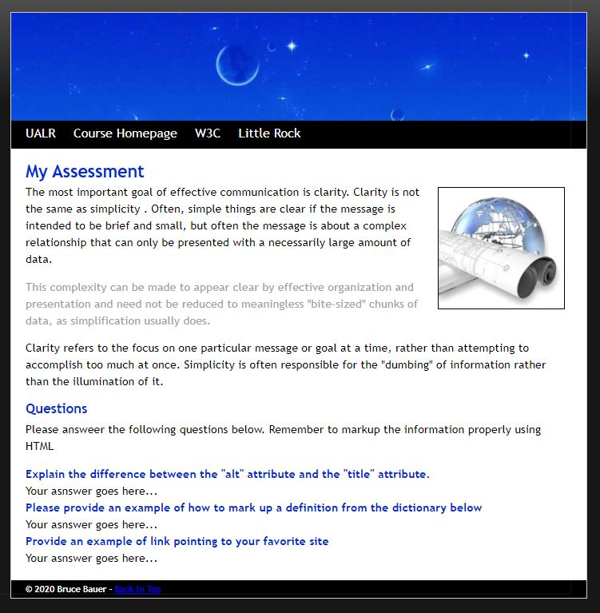

If you would like to take a look at an example of my writing abilities, feel free to click here to download a brief paper I wrote about an article called Ethical Code for Cybersecurity.
This is a bit more of personal writing example. I really enjoy writing in a fictional sense. I also like to make people laugh so I wrote this little story in hopes I may make someone out there laugh. Feel free to check out my story on cavemen learning how to share right here.
The goal of this project was to duplicate a website based on an image given to me. Below, you will find the image I was given. Hover over image to enlarge.
Here is my replication of the site: Website Replication
During my Internet Technologies class - which is arguably my favorite class from my time back in school - our first "project" was to create a website covering something we were interested in at the time. This was back in 2018. At that time, I was really big into this game developed by Bungie called Destiny. I came up with the content in this site as a bit of a joke so it is not to be taken seriously. I wanted it to be fun. Feel free to take a look at my site right here: Destiny Website
The goal of this project was to create a database while showing the relational schemas and entity relationships. I was to use SQL coding to create and populate the database. I chose a media cataloging project because I'm a huge fan of Spotify and wanted to try and replicate something similar to it.
You can find my project report here: Media Cataloging Application
This project centered more on designing a database system and showing all the working pieces of it. Components of the system include: a data flow diagram, a diagram 0 DFD, a use case diagram, a system sequence diagram, and a class diagream. For this project, I chose a hotel reservation system as it pertained to my job at the time.
You can find my project report here: Hotel Reservation System
This group project was completed in my Human-Computer Interface class. It was completed using only Java in Netbeans. As a group of 3, we were tasked with creating a user interface to add, modify, and delete user and website data. My job for the project was to add new websites, and modify existing website data. Our interface worked exactly as intended and our professor told us we created the best one in our class.
While this won't show you the code we used, this link will take you to our presentation so you can see the final product: User Interface Project
Click here for a JavaScript form example JS Form
This is a proposal I wrote for my Technical Writing class. The goal was to present an option for improving campus life and encourage economic growth around the University's campus. You can click here for a PDF version of my proposal.
If my degree in Anthropology taught me anything, it was how to analyze information and make informed decisions based on my understanding of the source material. For example, you can click here to see my interpretaion of an article called The Communication Habits of Engineers by Derek Steiner.
Below, you will find a link to my senior capstone project. I chose to create a website for a possible business venture I'd be interested in pursuing later in my life.
Tranquil Waters Website Project - Project Charter PDF